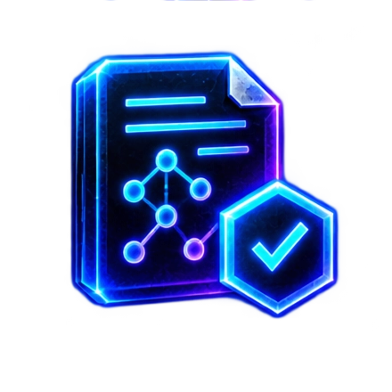

XIOM project -- experimental, pre-alpha
OrbitDB
An embedded database engine in pure XIOM: B-tree index, write-ahead log, query engine, transactions and crash recovery, organised as a layered engine on the shared durable-systems substrate. It reuses the ecosystem's core primitives instead of copying them.
Phase 1 showcase: the repository is private during development, so there are no downloads and no release claims yet. Every state below points at evidence in the private repository; nothing is said here that the repository does not show.
What works today
B-tree index
Insert, search and delete on a flat-array B-tree, churn-proven against a model.
Range queries
Low/high scans, min/max and in-order traversal.
Write-ahead log
Append, replay and truncate; durable segment file.
Crash recovery
Disk WAL and page file with crash harnesses on Windows and WSL; torn-tail healing.
Query engine
Equality and range filters with limit and offset.

Schema catalog
Schema definitions with validation.
Pages and buffer pool
Storage primitives, page files and the buffer pool.
Tuple codec and CRC32C
Byte-packed records; checksums verified on read.
Conformance suite
104 tests.
Transactions
State machine only -- no isolation or crash-safe redo/undo yet.
fsync durability
Not yet -- waiting on the standard library's fsync row; power-loss durability is scored at zero until then.
What is next
- Move storage onto the shared pager and store B-tree nodes in pages.
- Make durability literal: fsync on commit, checkpointing, LSN ordering, power-loss tests.
- Then transactions with real isolation, a query planner and secondary indexes.
- Phase 2: GitHub releases and mirror installers, once the repository opens and the gates pass.
Pre-alpha means pre-alpha: the in-memory core is done and the durable log and pages are landing, but nothing here is ready for production data.
Downloads
Nothing to download yet. Phase 2 publishes GitHub releases and mirror installers for every OS, like the toolchain's.